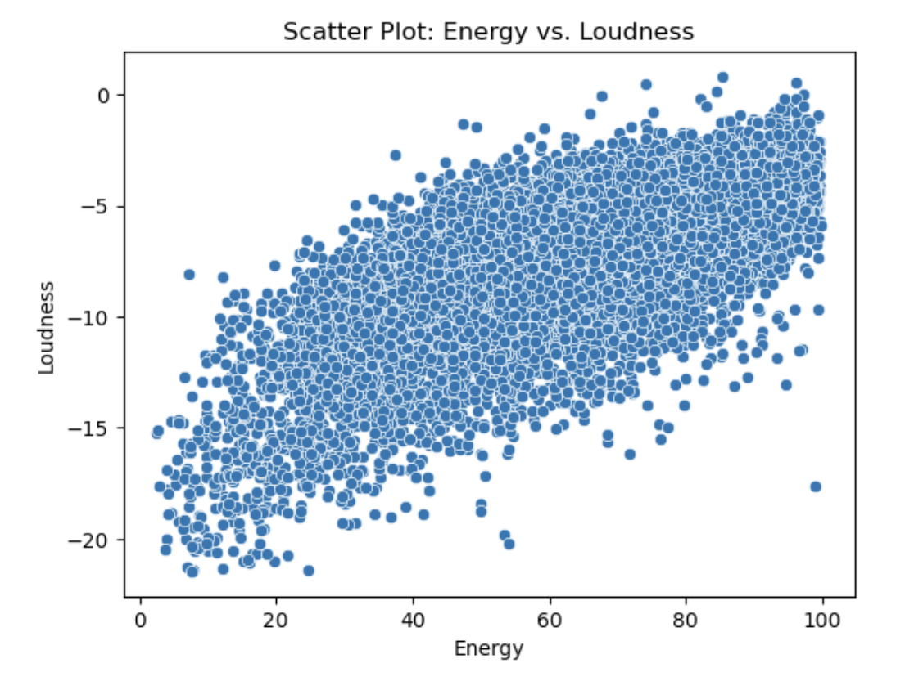
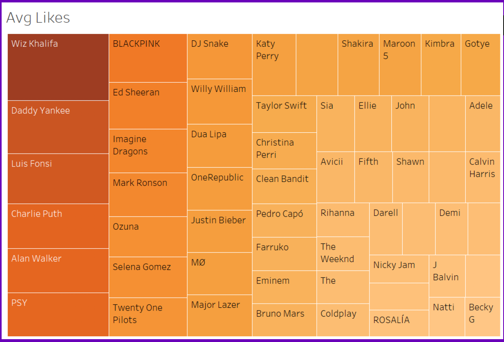
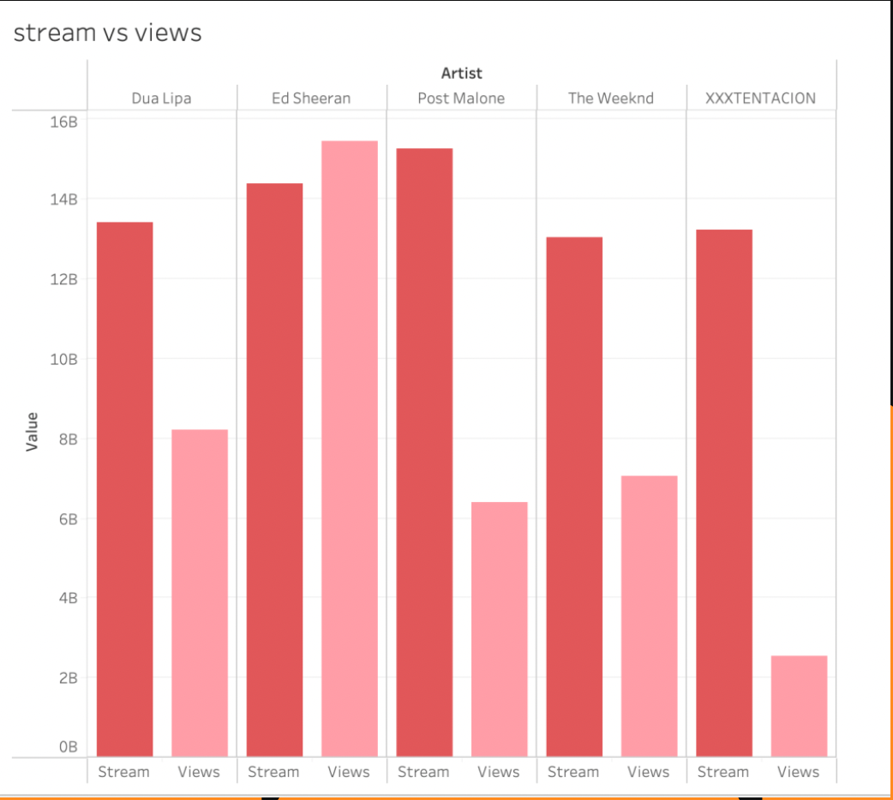

Project Overview
This project leverages a dataset of 26 variables encompassing music features and audience engagement metrics from platforms like Spotify and YouTube. The goal is to predict engagement metrics (views and likes) based on musical characteristics, aiding decision-making for musicians, producers, and marketers.
Problem Statement
Predicting the popularity of music tracks is challenging due to the varied nature of engagement metrics and the diverse features of songs. This project aims to identify key predictors of song popularity to support strategic decision-making in the music industry.
Solution/Approach
- Data Collection and Preprocessing: The dataset was analyzed to handle missing values and normalize key features. We also conducted feature engineering, creating variables like the duration in minutes.
- Exploratory Data Analysis (EDA) Examined relationships between features, such as loudness and valence, and the target metrics of views and likes to identify meaningful correlations.
- Modeling: Utilized multiple regression and machine learning models, including Random Forest and Gradient Boosting, to predict engagement metrics. Model performance was evaluated based on RMSE and R-squared.
Key Steps and Tasks Performed
- Exploratory Data Analysis (EDA): Regression Techniques and Model Evaluation
- Data Preprocessing: Handled missing values, performed outlier analysis, and feature scaling.
- Modeling and Evaluation: Applied various models, compared performance, and optimized hyperparameters.
Tools & Skills Utilized
- Python (Pandas, NumPy, Scikit-Learn)
- Visualization Libraries (Matplotlib, Seaborn), Tableau
- Regression Techniques and Model Evaluation
Key Learnings
Learned to interpret correlations between song features and audience engagement, with specific insights for duration and valence. Improved skills in model selection and evaluation for predictive analytics in the music industry.

Correlation between Energy and Loudness

Treemap for Avg Likes

Stream vs Views for Artists